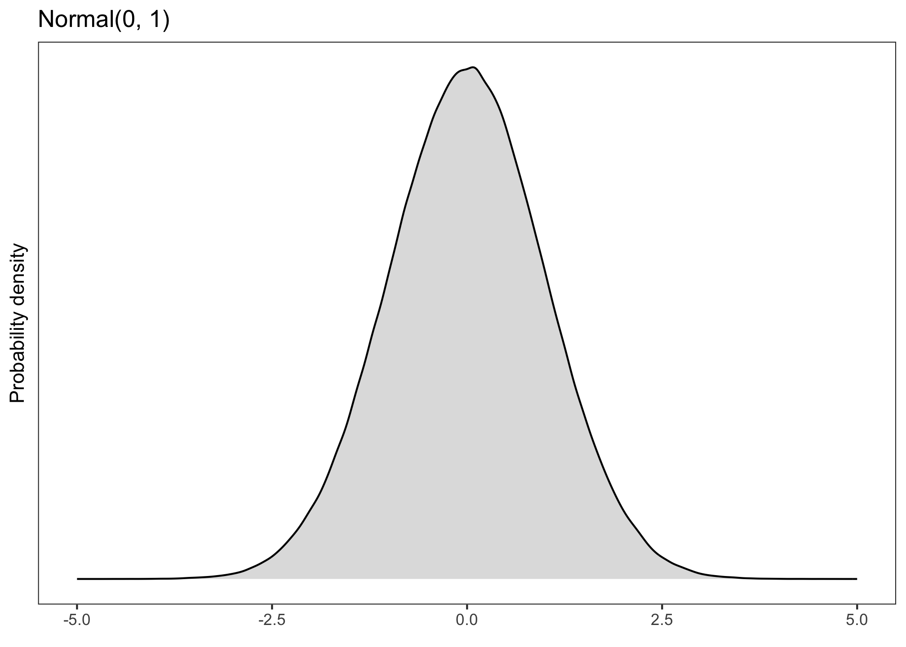
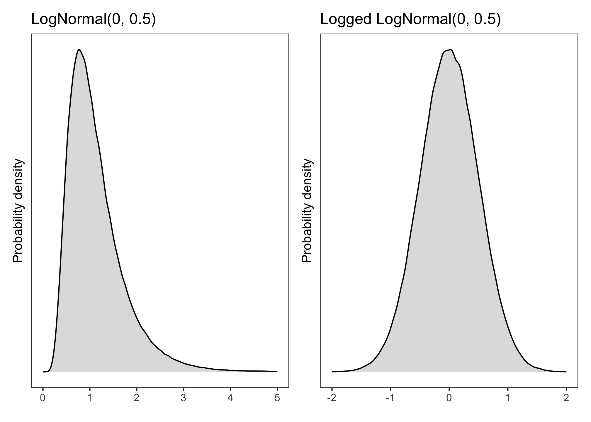
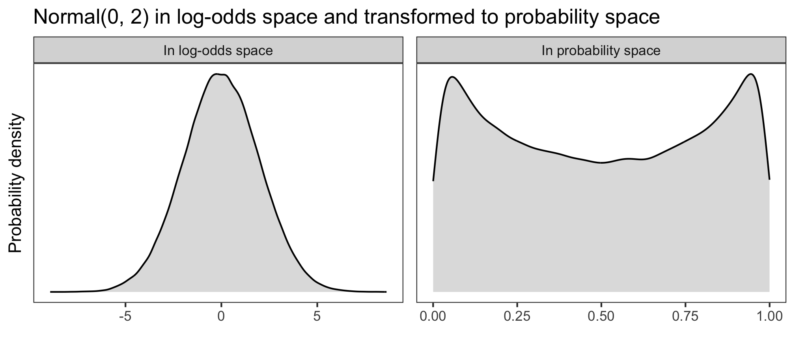

Building the model
Anatomy of a Bayesian model
A Bayesian model combines the likelihood of the data, given different hypotheses, with the prior probabilities of those hypotheses, to give us the posterior probabilities of how probable different hypotheses are, given the data.
When we’re doing Bayesian inference, these hypotheses correspond to different parameter values: different values that the model’s coefficients can plausibly take on. The priors over these parameter values define how plausible we think different values are a priori. And the model will produce posteriors over the same parameter values that tell us what parameter values the model thinks are plausible, given the data.
But before we get to the posterior, we’ll need to define for our model a likelihood and some priors. We’ll start with the likelihood because it’s the closest part of the model to the outcome, so it’s the best starting point for figuring out a model that could plausibly have generated the outcome we observe. And it’ll also affect how our priors will look later.
Choosing a likelihood
If you’ve done linear modelling before, you’ve probably already encountered this idea under the guise of the “model family”. If you know that you can fit a basic linear model to continuous outcome data, but that you need a binomial/Bernoulli/logistic model for binary outcome data, then you know how to choose a likelihood function.
The likelihood function is selected based on the kinds of values that the outcome variable can take on. Here are three common examples.
Normal (Gaussian)
A continuous variable, such as formant values in Hz, can be said to follow a normal distribution (aka a Gaussian distribution). A normal distribution looks something like this:
So if we were modelling Hz, we would use a normal likelihood, and we could write it like this:
\[ Hz \sim Normal(\mu, \sigma) \]
“Hz is distributed according to a normal distribution with mean \(\mu\) and standard deviation \(\sigma\).”
(\(\mu\) and \(\sigma\) are parameters that define the distribution’s shape: where its mean is located, and how spread-out the distribution is around that mean, respectively.)
If you would use a basic linear model, not a generalised linear model, in your analysis, you would choose a Normal likelihood.
Log-normal
A continuous variable that’s positive-only and right-skewed, such as reaction times, might follow a normal distribution only once it’s been log-transformed. This means that, without any transformation, it follows a log-normal distribution.

We write this as:
\[ RT \sim LogNormal(\mu, \sigma) \]
“RT is distributed according to a lognormal distribution with location \(\mu\) and scale \(\sigma\).”
Equivalently, one could log-transform RTs and model them with a normal likelihood:
\[ \log(RT) \sim Normal(\mu, \sigma) \]
This is how it’s typically done in frequentist circles, but Bayesian models make it just as easy to use a lognormal likelihood as a normal one.
Bernoulli
If the outcome is binary (e.g., 0/1, success/failure, grammatical/ungrammatical, English/French, etc.), then we assume that it comes from a Bernoulli distribution defined by \(\theta\), the probability of success.
\[ success \sim Bernoulli(\theta) \]
“Success is distributed according to a Bernoulli distribution with probability \(\theta\).”
Our model today will have a Bernoulli likelihood, since our data is binary: 0 if the participant rejected the sentence they saw, 1 if they accepted it.
Other likelihoods
Other likelihoods you may encounter include Poisson (for count data) or beta (for data in [0, 1]), and there are more besides. But for the usual analyses in experimental linguistics, the three above will be ones we reach for.
Begin building the model
Now that we have a likelihood, the next step is to think about what priors our model needs.
You saw that each of those likelihood functions above contains parameters that define their shape: \(\mu\), \(\sigma\), \(\theta\). Every parameter in a Bayesian model needs to have a prior that tells the model which values are a priori plausible for that parameter to take on.
In this section, we build the model up bit by bit. This process will show us how many parameters our model has, and therefore what priors the model needs. We’ll start with the likelhood.
To build up the model, we’ll start off by defining the model’s likelihood.
We determined already which likelihood we need: acceptance \(acc\) follows a Bernoulli distribution.
\[acc \sim Bernoulli(\theta)\]
We’re interested in modelling what affects \(\theta\), the probability of accepting a sentence. In other words, we want \(\theta\) to be able to take on different values, depending on the condition participants were in and what kinds of sentences they were seeing. \(\theta\) should be high in a certain situation if participants are more likely to accept sentences, and it should be low in another situation if they are more likely to reject them.
OK, well, more precisely: we actually want \(logit(\theta)\), the log-odds of accepting a sentence, to be able to take on different values. Converting probabilities (bounded between 0 and 1) into log-odds (unbounded) moves our estimation into a continuous space in which a line, also a continuous thing, can reasonably be fit.
In a linear modelling approach, we allow \(logit(\theta)\) to take on different values depending on the values of our predictors (\(cond\) for condition, \(sent\) for sentence) and their interaction (\(cond \cdot sent\)) by setting it equal to this linear expression:
\[ logit(\theta) = \alpha + (\beta_1 \cdot cond) + (\beta_2 \cdot sent) + (\beta_3 \cdot cond \cdot sent) \]
There’s a lot of Greek here! \(\alpha\), \(\beta_1\), \(\beta_2\), and \(\beta_3\) are the parameters that we want our model to estimate. You might recognise \(\alpha\) as the line’s intercept, and all the \(\beta\)s are the slopes, aka the effects, aka the coefficients of our predictors. We will need priors for all of these parameters.
The priors will tell the model which values for each parameter we think are plausible, and they do this by describing how these parameter values are distributed. So, formally(ish), we’ll end up with a model that looks like this:
\[ \begin{aligned} \text{acc} & \sim Bernoulli(\theta) \\ logit(\theta) & = \alpha + (\beta_1 \cdot cond) + (\beta_2 \cdot sent) + (\beta_3 \cdot cond \cdot sent)\\ \alpha & \sim \text{something} \\ \beta_1 & \sim \text{something} \\ \beta_2 & \sim \text{something} \\ \beta_3 & \sim \text{something} \\ \end{aligned} \]
Finding suitable “something”s is the focus of the next section.
Choosing priors
There is a lot of literature on how to choose appropriate priors, and many different schools of thought.
Different kinds of priors you might encounter:
- Informative priors: Priors that are quite narrow, reflecting more a priori certainty about the values that we believe to be plausible. These priors might come from, e.g.:
- Domain knowledge elicited from experts.
- Effect size estimates from one’s own previous research or from meta-analyses.
- Weakly regularising priors: Priors that are fairly broad, reflecting a priori uncertainty about plausible parameter values. They rule out impossibly large values (e.g., RTs in the millions), but are uncertain enough that the data has much more of an influence on the posterior than they do.
- brms’ default priors: If you don’t specify any priors when you fit your model, brms will use its defaults. (You can see what these are with the command
brms::get_priors(mymodel).)
I personally prefer to use weakly regularising priors, because (a) there often isn’t lots of domain knowledge available for the kinds of studies I’m running, and (b) weaker priors are less philosophically alarming to researchers trained in frequentism, and these are generally the people who review our papers.
Let’s walk through how to come up with weakly regularising priors for \(\alpha\) and the \(\beta\)s in the model above.
Consider order of magnitude/model space
TLDR: Your priors must match the order of magnitude of the space the model is fit in.
If the model’s coefficient estimates are interpretable using the same units as the outcome (e.g., if you’re using a normal likelihood), then we can say that the model is “fit in the outcome space”. If your model is fit in the outcome space, then you’ll need to think about what order of magnitude your outcome variable has.
- For example, if your outcome is raw reaction time, then your effects might be in the hundreds (of milliseconds).
- But if your outcome is log reaction time, then your effects are probably in the single digits (of log units).
A weak prior on the log scale is an incredibly restrictive prior on the millisecond scale. So the prior has to match the order of magnitude of the outcome.
If the model is not fit in the outcome space—i.e., if the outcome is transformed into a different space, and then the linear model is fit there—we need to know what space the model is fit in. This is because the priors have to be on the transformed scale, not the outcome scale.
In our case, our model transforms probabilities into log-odds, and then the linear expression is fit in log-odds space. That means our priors have to be on the log-odds scale.
A prior for \(\alpha\)
\(\alpha\) represents the intercept of our linear model. It is the outcome, in log-odds space, when all predictors equal zero. Because we’ll code up our predictors with \(\pm\) 0.5 sum coding, our \(\alpha\) represents the grand mean of the outcome.
Our goal: to come up with a weakly regularising prior that allows the outcome’s grand mean to take on basically any value. And for the intercept in particular, it’s useful to consider how this prior translates to probability space.
Let’s have a look at three different log-odds priors (in the left panels), and how they look once back-transformed into probability space (right panels). The higher the probability density, the more plausible the model will consider those values to be.


What looks like an unassuming normal distribution in log-odds space can get pretty wacky in probability space. If we used \(\alpha \sim\) Normal(0, 2), then the model would think that probabilities of success near 0 and 1 are more plausible than probabilities around 0.5. And if we used \(\alpha \sim\) Normal(0, 1), then the model would think that those same extreme probabilities are very implausible, compared to the more moderate values. What we want is something in between.
When Normal(0, 1.5) is transformed into probability space, it yields a decently uniform distribution: basically any probability of success is a priori equally plausible.
We like this permissiveness, so this will be our prior for \(\alpha\). Our model becomes:
\[ \begin{aligned} \text{acc} & \sim Bernoulli(\theta) \\ logit(\theta) & = \alpha + (\beta_1 \cdot cond) + (\beta_2 \cdot sent) + (\beta_3 \cdot cond \cdot sent)\\ \alpha & \sim Normal(0, 1.5) \\ \beta_1 & \sim \text{something} \\ \beta_2 & \sim \text{something} \\ \beta_3 & \sim \text{something} \\ \end{aligned} \]
A prior for the \(\beta\)s
The \(\beta\)s represent the effects of interest—the main effects of \(cond\) and \(sent\), and the effect of their interaction—in log-odds space. Note: I generally use the same weakly regularising prior for all the \(\beta\)s, especially if they’re all on the same scale or coded the same way.
We found a decent prior for the intercept, \(\alpha\), by considering the mapping from log-odds to probability space. There’s no direct mapping for the \(\beta\)s in the same way. This is because the \(\beta\)s are added to the intercept in log-odds space; they never surface directly into the outcome space themselves, so it doesn’t make sense to think of them in terms of probabilities.
That \(\beta\)s don’t stand alone makes it a bit harder to reason about what priors are sensible. How do we get around this? Enter prior predictive checks.
Prior predictive checks in brms
The basic idea is that we can capitalise on Bayesian models’ capacity as generative models to check whether different priors generate sensible data.
We tried it out for ourselves yesterday. But luckily, brms automates this for us!
We’ll set up models with a few different priors and use them to generate simulated data. Then we’ll look at that simulated data and see whether it looks fair. For us, “fair” means not too restricted—we want permissive priors (see Cromwell’s Rule above). This process is called “prior prediction” or “doing prior predictive checks”. (We’ll also do “posterior predictive checks” after fitting the model—stay tuned.)
Here’s the basic template for how to set up a prior predictive model in brms using the function brm().
mymodel <- brm(myoutcome ~ mypredictor + (1 | mygroup),
data = mydata,
family = bernoulli(),
prior = c(
prior(normal(0, 1.5), class = Intercept),
prior(SOMETHING, class = b)
),
backend = 'cmdstanr',
sample_prior = 'only')- The first argument is the model formula in
lme4syntax. - The
data=argument names the data frame where the data to analyse can be found. - The
family=argument defines the model family (bernoulli(),gaussian(), etc.). - The
prior=argument defines the priors that the model will use. If there is noprior=argument, the model will use the default priors. - The line
backend = 'cmdstanr'argument specifies that the model will be fit using CmdStan. - The line
sample_prior = 'only'is what makes this model into a prior predictive model: it ignores the data and uses only the priors to estimate the posteriors (basically just reproducing the priors). Removing this line will cause the model to take the data into account when estimating posteriors, and we’ll do this when we properly fit the model.
Copy and adapt the template above to fit a prior predictive model with the formula sentence_accepted ~ cond + sent + condsent and the very-wide prior normal(0, 10) for class = b (“b” stands for “beta”), using data from acc. Name the model priorpred10.
priorpred10 <- ...This model will estimate posteriors that reproduce the priors, ignoring the data, so that we can use these posteriors to generate some new data and see whether it look reasonable.
Generating predictive data is such a common thing to do that brms comes with a useful function that helps us do it graphically: pp_check() (documentation here).
Using your model priorpred10, run the following code. Here’s what the arguments we pass to pp_check() mean:
type = 'stat'is one possible type of plot generated bypp_check(). It applies some summary statistic to the generated data.stat = meansays that our summary statistic is going to be the functionmean().prefix = 'ppd'hides the observed data, which is shown by default, displaying only the predictive distributions (“ppd” = “prior predictive distribution”). It doesn’t make sense to include the data in the plot, because our prior predictive model didn’t take it into account.
pp_check(priorpred10,
type = 'stat',
stat = mean,
prefix = 'ppd') +
labs(x = 'theta', # We can add the usual layers to the ggplot object!
title = 'Prior predictive distribution means with beta ~ Normal(0, 10)')This plot is telling us that the mean probability of success (i.e., of accepting a sentence) in the prior predictive distributions is nearly always around 0.5, and it’s very unlikely to have probabilities of success above or below that. This doesn’t look so great—we want a much broader and more even spread of means in the data that our model generates. Why? Because we want our model to be equally compatible with many different outcomes, not incredibly specific like this one is.
So let’s try a few more priors. Adapt the code above to fit a few more prior predictive models using these priors:
- \(\beta \sim Normal(0, 5)\)
- \(\beta \sim Normal(0, 2)\)
- \(\beta \sim Normal(0, 1)\)
- \(\beta \sim Normal(0, 0.1)\)
(and any others you want to try!)
For each model, generate a summary histogram using pp_check(), and then have a think about the following questions:
- Which of these priors produces the most even-looking distribution of outcome means?
- Is that the prior we’ll want to use?
- What effect sizes do each of these priors consider reasonable?
Once you’ve gathered your own thoughts, uncollapse this box to have a look at mine:
Summary: The model-building workflow
Find a likelihood suitable for the outcome data.
Identify the parameters required by the likelihood and by the line you want to fit.
Use prior predictive checks to find plausible priors for each of those parameters.